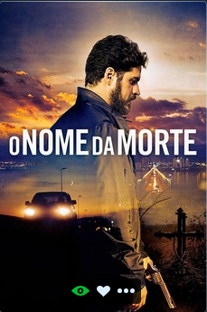
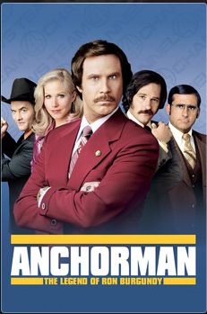
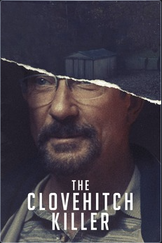
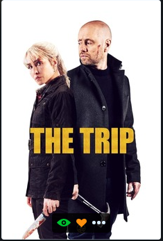
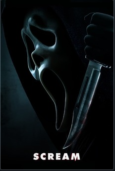

Até o momento assiste 7 filmes, e nesse site escreverei brevemente à respeito, rankeando do menos ao mais favorito.
Lara Lourenço
O nome da morte conta a história de um assassino de aluguel brasileiro que matou mais de 500 pessoas. O filme é um drama muito intenso e sabe usar da violência para chocar o espectador e do drama para nos esclarecer as consequências dessa profissão para todos aqueles que estão próximos ao protagonista.
Uma comédia completamente maluca sobre um grupo de jornalistas em busca da audiência para sua nova emissora.
Otímo suspense para aqueles que adoram reviravoltas. Programa perfeito para assistir com a família num domingo.
Documentário sobre a história do axé music. Perfeito para aqueles que adoram conteúdos sobre música , pois o documentário explora as produções musicais e como funcionam as gravadoras no Brasil.
Suspense assustador em que um filho desconfia que seu pai é o famoso assassino de Clovehitc, serial killer que deixou 10 vítimas e desapareceu sem deixar rastros.
Comédia em que um casal decide colocar fim no casamento de um jeito nada convencional, mas seus planos não correm como o esperado.
Para mim que sou apaixonada pela franquia Pânico este filme é uma continuação perfeita para a história dos personagens que já conhecemos, e apresenta a nova protagonista perfeitamente. Franquias de terror perdem a qualidade no decorrer nos filmes, mas esta continua incrível.
